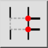
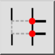
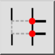
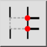

Segment uitbreken manueel
Werkbalk / icoon:
 

Menu: Modificeren > Segment uitbreken manueel
Sneltoets: B, 2
Opdrachten: brk | b2
Dit is een automatische vertaling.
Werkbalk / icoon:
 

Menu: Modificeren > Segment uitbreken manueel
Sneltoets: B, 2
Opdrachten: brk | b2
Verdeelt objecten door een lijnstuk uit te snijden tussen twee door de gebruiker gedefinieerde punten.